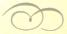

It seems that September 11, 2001 was a great turning point for me. It was the day I stood up to Greg and all he stood for. It was also the day I first anticipated the new garbage album would be released. I actually decided this week to burn the bridge between me and Greg. I'd heard from Ilya on Wednesday that Greg said I was annoying. That did it for me. That was the last straw.
Blah blah blah blah blah...who cares.
I'm slowly achieving my ultimate goal against Greg. I'm taking the people he's recklessly thrown aside and started to build a network of friends. As mean as it sounds, I've assimilated John, Brad, Ilya, Leena, Sara, Missy, and others int my anti-Greg group. HE HE HE...I'm going to tear is world apart!
It's incredible how evil I was when I was a freshman. I admit now that more then anything I was jealous of Greg. He was confident and he was able to approach people and befriend them very easily, and I wished then that I could have these qualities as well.
And I really didn't "assimilate" all those people into a group. It was really just Missy that I got to my side. Everyone else came to their own realization that Greg was an idiot, I had nothing to do with it. I sure took the credit though...
Getting over that complete loser was the best thing ever for me. I've achieved what I set out to do: I have an amazing set of friends, and I have no desire to be his friend. I'm going to try to never mention him again, he's that worthless.
HORRAY! No more mentioning Greg! Wow! I'm so shocked, amazed...
And you KNOW I'm lying.